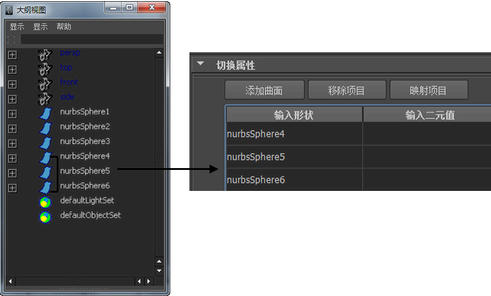

有关“二元值切换”(Double Switch)工具的描述，请参见二元值切换。
切换 2D 纹理上的双精度浮点型属性，如 2D 纹理的“UV 向重复”(Repeat UV)或“平移帧”(Translate Frame)。
为了方便起见，在开始学习此教程之前，请从 Hypershade 菜单中选择“窗口 > 视口”(Window > Viewport)和“窗口 > 大纲视图”(Window > Outliner)，并将这些面板停靠到 Hypershade 中。请参见在 Hypershade 中自定义布局。
使用“二元值切换”(Double Switch)工具
- 创建材质并将其指定给对象。
- 将 2D 纹理贴图到该材质的某一种属性，如“颜色”(Color)。调整纹理的属性（如有必要）。
- 贴图 2D 纹理时会创建一个 place2dTexture 节点。在 Hypershade 中选择纹理的 place2dTexture 样例，以在特性编辑器中查看其属性。
- 将光标放在“UV 向重复”(Repeat UV)属性上，然后在弹出菜单的“创建新纹理”(Create New Texture)上单击鼠标右键。
- 从“创建渲染节点”(Create Render Node)窗口的“Maya > 工具”(Maya > Utilities)中选择“二元值切换”(Double Switch)工具。请注意，球体可能会丢失其纹理。
此时，可以在 doubleShadingSwitch
特性编辑器中应用默认设置。您可以贴图新的纹理或更改 U 和 V 的值。在以下两种情况下，U 和 V 的“默认”(Default)值均更改为 1.5。
- 在大纲视图中，使用鼠标中键来选择要为其调整 UV 纹理放置的球体，然后将其拖动到 doubleShadingSwitch
“特性编辑器”(Property Editor)的“切换属性”(Switch Attributes)区域的“输入形状”(In Shape)列。

请注意，只有移动到“输入形状”(In Shape)列中的球体会丢失其纹理。这些球体即为要修改的球体。
- 按住 Shift 键并选择 inShape 列中的所有行，然后单击鼠标右键并选择“贴图”(Map)。
- 从“创建渲染节点”(Create Render Node)窗口的“Maya > 工具”(Maya > Utilities)中选择“2D 放置”(2d Placement)工具。此时将出现“连接编辑器”(Connection Editor)。单击“UV 向重复”(Repeat UV)
“输出”(Output)属性（在左列中），然后在右列中，展开 input[0] 并选择 input[0].in Double。根据要映射的球体数，还要选择 input[1].inDouble、input[2].inDouble 等。
只有在“二元值着色切换”(Double Shading Switch)的特性编辑器中贴图的球体才会进行更新。单击 Hypershade 中的 place2dTexture 样例以打开其特性编辑器，并调整“UV 向重复”(Repeat UV)值（如有必要）。较高的“UV 向重复”(Repeat UV)值可使栅格图案变得更密集。